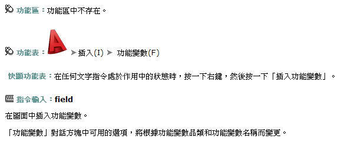

此功能變數是可更新的文字，為特殊的文字物件，設定用來顯示在圖面的生命週期中可能發生變更的資料。更新此功能變數時，將顯示功能變數的最新值。 (FIELD)
功能變數文字與在其中插入文字的文字物件使用相同的文字型式。依預設，將以不出圖的淺灰色背景 (FIELDDISPLAY 系統變數) 顯示這些功能變數。
功能變數如何更新?
使用 REGEN即可更新。當來源物件變更時其功能變數是會跟著更新(聯動)，而系統預設為 開啟、儲存、出圖、電子傳送即重生(REGEN)時更新。
全屏展示：
參考資料：AutoCAD 2009使用者文件